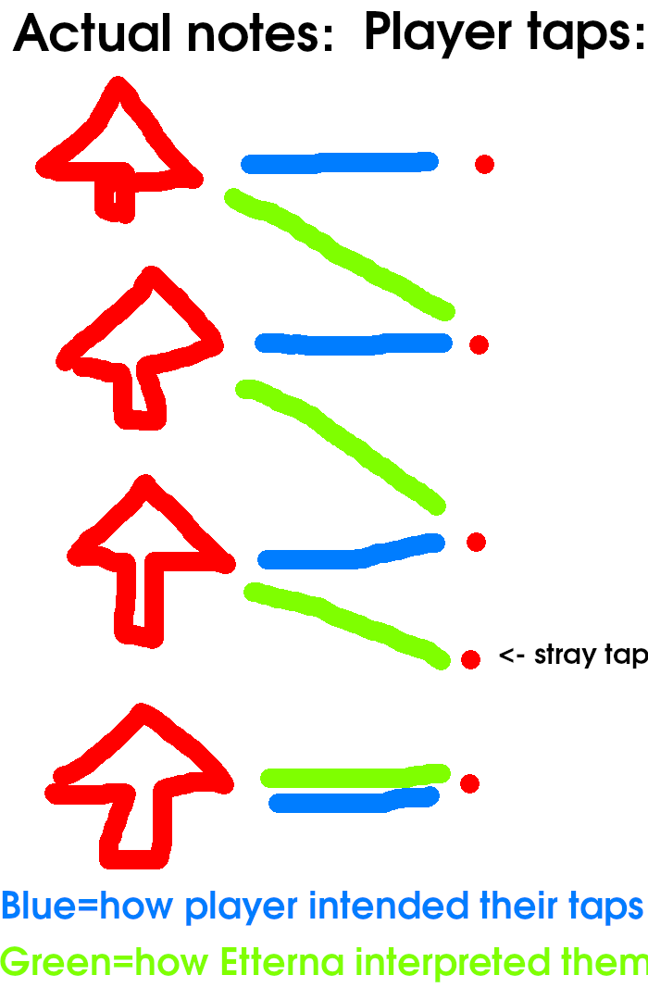

When you accidentally insert an extra tap, Etterna thinks you meant to hit the upcoming note. This creates an early hit and also offsets all further taps on this column. This creates a stream of bad judgements.
Here’s an illustration (oriented downscroll: bottom to top):
Actually the bot doesn’t detect CB rushes per se. Instead, it gathers the raw hit data and runs it through a different hit system than the Stepmania/Etterna one. This new hit system is designed to not be susceptible to CB rushes in the first place.
| Default hit system | Modified hit system |
|---|---|
| When you tap a key, the nearest note that hasn’t been already judged will be used as the tap’s associated note | Key taps will be mapped to the notes in a best-match fashion. If you hit a stray tap, but afterwards get a more precise hit on the same note, instead of choosing the upcoming note as the associated note, this hit system will just throw out the old associated hit and count it as a miss. |